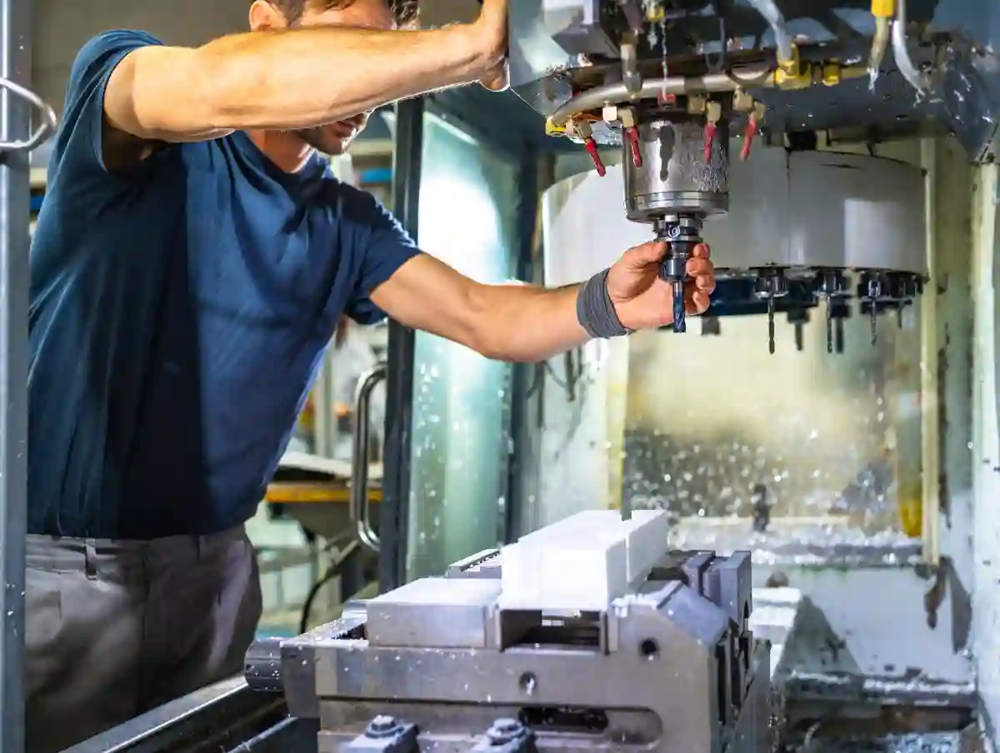
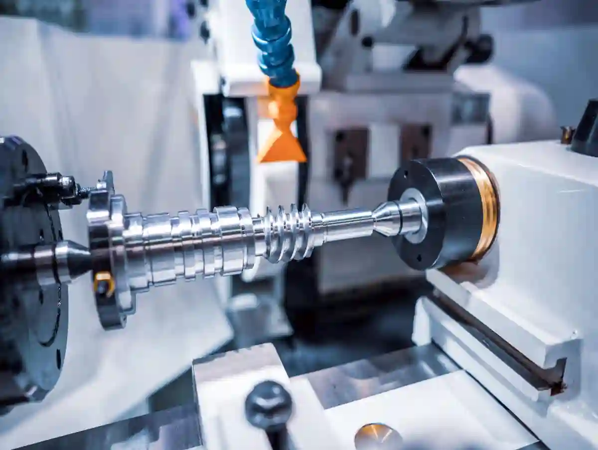
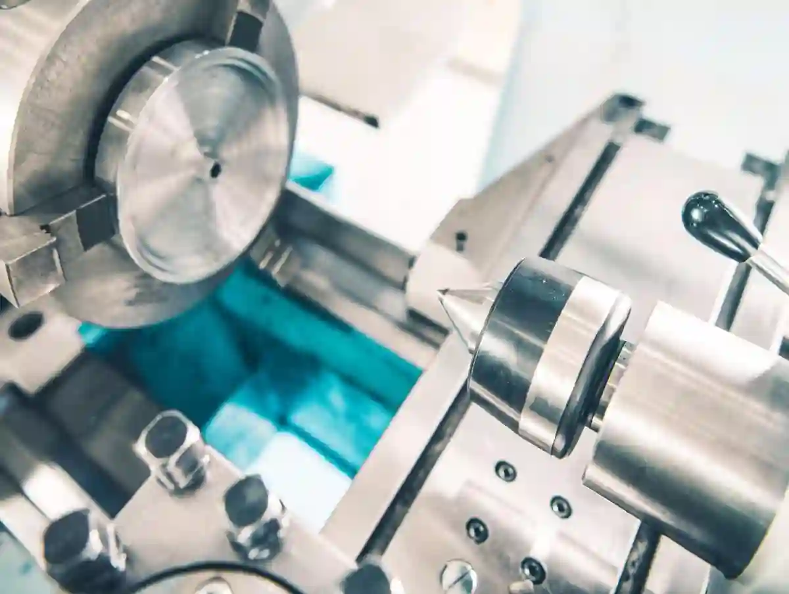

Özel Talaşlı İmalat Nedir? Standart Üretimden Farkları
Bir parçayı “üretmek” ile bir parçayı doğru şekilde üretmek aynı şey değildir. Endüstride çoğu problem; yanlış yöntemle doğru ölçüyü kovalamaktan çıkar. İşte özel talaşlı imalat tam bu noktada devreye girer: Standart bir proses akışını her parçaya uygulamak yerine, parçanın fonksiyonuna ve teknik gereksinimine göre üretim stratejisi kurgulayan yaklaşım.
Özel talaşlı imalat, standart katalog/seri üretim mantığıyla üretilemeyen parçaların; teknik resme özel üretim kriterleri, toleranslar, malzeme ve kullanım şartlarına göre proje bazlı cnc üretim planı yapılarak CNC tornalama/frezeleme gibi yöntemlerle üretilmesidir.
Bu yaklaşım, özellikle “bir seferlik” ya da “düşük adetli ama kritik” parçaların üretiminde görünür avantaj sağlar. Çünkü standart üretimde amaç; tekrarlanabilirliği yüksek, maliyeti düşük, süreçleri sabit bir akıştır. Oysa özel üretimde amaç; parçanın sahada çalışmasını garanti edecek teknik doğruluğu yakalamak ve bunu sürdürülebilir bir kalite sistemiyle teslim etmektir.
Bu yazıda; özel talaşlı imalat yaklaşımını, standart üretimden ayrıldığı noktaları ve teklif sürecinde hangi bilgilerin gerçekten sonucu değiştirdiğini “atölye diliyle” ama teknik doğruluktan sapmadan ele alacağız. AYMAKSAN’ın entegre üretim yaklaşımıyla uyumlu şekilde; tornalama, frezeleme, prototip ve ölçüm disiplinlerinin aynı hedefe nasıl hizmet ettiğini de netleştireceğiz.
Özel Talaşlı İmalat Ne Zaman Gerekir?
Kısa cevap: “Standart parça işinizi görmediğinde.” Uzun cevap ise birkaç tipik senaryoda toplanır.
Standart tedarikle çözülemeyen, ölçü-tolerans ve fonksiyonun kritik olduğu durumlarda özel talaşlı imalat gerekir. Prototip, Ar-Ge test parçası, revizyonlu proje veya sahada arızalanan komponentin hızlı yenilenmesi tipik örneklerdir. Düşük adetli ama yüksek hassasiyetli işlerde fikstürleme, takım yolu ve ölçüm planı parçaya göre kurgulanır; böylece termin riski azalır. Katalog parça uymazsa, malzeme sertliği/kaplama şartı değişirse ya da montajda eşmerkezlilik istenirse özel talaşlı imalat en doğru yaklaşımdır. Ayrıca geri mühendislik gereken numunelerde, çizimi eksik parçaların yeniden üretilmesinde ve tolerans yığılması sebebiyle montaj kaçıran setlerde çözüm sağlar; ölçü raporu talebi olan müşterilerde izlenebilirlik kolaylaşır. Kritik yüzey pürüzlülüğü, delik konumu ve sızdırmazlık bölgeleri güvenceye alınır.

Standart Parça = Ölçü Var, Bağlam Yok
Tedarik zincirinde bulunan bir standart bileşenin ölçüleri benzer olabilir; fakat bağlamı (yük, sıcaklık, sürtünme, montaj toleransı, yüzey şartı) farklıysa sahada problem çıkar. Bu durumda özel talaşlı imalat; parçayı sadece “ölçü olarak” değil, “fonksiyon olarak” üretir.
Revizyonlu Projeler ve Sahadan Gelen Geri Bildirim
Saha arızaları genelde “tek bir ölçü” yüzünden değil, tolerans yığılması (tolerance stack-up), yanlış yüzey pürüzlülüğü veya malzeme davranışı yüzünden oluşur. Burada müşteri talepli imalat akışı; revizyon çevrimlerini hızlı yönetebilen, teknik çizim okumayı ve proses seçimini iyi yapan bir üretim partneri gerektirir.
Düşük Adet – Yüksek Kritiklik
“Az adet” parçanın “kolay” olacağı düşünülür; fakat çoğu zaman tam tersidir. Çünkü fikstür, takım seçimi ve ölçüm planı, adet az olsa da yine kurulmalıdır. Özel üretimin farkı; bu hazırlıkları parçaya göre optimize ederek toplam riski düşürmesidir.
Standart Üretim ile Özel Talaşlı İmalat Arasındaki Temel Farklar
Standart üretimde proses akışı, takım seti ve kalite kontrolleri çoğunlukla sabittir; hedef tekrarlanabilirlik ve birim maliyettir. Özel talaşlı imalat ise parçanın geometrisi, toleransları ve kullanım şartlarına göre operasyon sırasını yeniden tasarlar. Fikstürleme stratejisi, referans yüzey seçimi, ara kontrol noktaları ve ölçüm metodu parçaya özel belirlenir. Böylece eşmerkezlilik, düzlemsellik veya delik konum toleransı gibi kritik değerler proses içinde korunur. Kısacası standart yaklaşım “seri akış”, özel talaşlı imalat “mühendislik odaklı planlama” demektir. Revizyon geldiğinde program ve bağlama hızla güncellenir; maliyet kalemleri şeffaflaşır. Malzeme sertifikası, yüzey şartı, ısıl işlem payı ve paketleme standardı işin başında tanımlanır; sürpriz azalır. Termin güvenilirliği belirgin şekilde artar.
1) Proses Sabitliği vs Proses Mühendisliği
Standart üretimde proses akışı önceden tanımlıdır; özel üretimde ise proses, parçaya göre seçilir. Örneğin; aynı malzeme, farklı geometrilerde bambaşka takım stratejisi ister. Bu nedenle proje bazlı cnc üretim yaklaşımı; sadece “CNC’de işleriz” demek değil, “hangi bağlamada, hangi takım yoluyla, hangi kontrol planıyla” demektir.
2) Fikstür ve Bağlama Stratejisi
Özel parçada çoğu kalite problemi, kesmeden değil bağlamadan gelir. Eğilme, titreşim, eksen kaçıklığı gibi riskler; doğru fikstürleme ile kontrol altına alınır. Bu yüzden özel parça imalatı süreçlerinde fikstür, üretimin “gizli maliyeti” değil, kalite sigortasıdır.
3) Ölçüm Planı ve İzlenebilirlik
Standart üretimde ölçüm noktaları genellikle bellidir. Özel üretimde ise ölçüm planı parçanın fonksiyonuna göre kurulur: kritik çaplar, eşmerkezlilik, düzlemsellik, delik konum toleransları gibi değerler “neden kritik” sorusuyla birlikte ele alınır. AYMAKSAN’ın kalite ve ölçüm yaklaşımını entegre sunması bu yüzden önemlidir.
İlk 24 Saatte Doğru Teklif için Hangi Bilgiler Gerekir?
Bir özel talaşlı imalat teklifi için ideal minimum paket şudur:
- 2D teknik resim (PDF) + mümkünse 3D model (STEP)
- Malzeme standardı ve sertlik/ısıl işlem bilgisi
- Adet ve beklenen tekrar sipariş olasılığı
- Kritik toleranslar ve yüzey pürüzlülüğü (Ra)
- Kaplama, boya, markalama, montaj gibi ek istekler
- Teslim hedefi ve sevkiyat formatı
Bu bilgiler yoksa teklif “fiyat” verir ama “risk” vermez. Oysa özel üretimde maliyetin büyük kısmı, risk yönetimidir.
Teknik Resme Özel Üretim Neden “Resim Okuma” ile Başlar?
Çizim; sadece ölçü değil, niyet taşır. Bir pah kırığının ölçüsü, montaj kolaylığı içindir. Bir yüzey pürüzlülüğü, sızdırmazlık içindir. Bir delik toleransı, pim geçmesi içindir. Teknik resme özel üretim demek; çizimdeki her işaretin sahadaki karşılığını doğru okumak demektir.
“Benzer Parça” Tuzağı
Birçok firma, benzer parça üzerinden fiyatlar. Ancak benzer parça; aynı tolerans, aynı bağlama ve aynı kontrol planı demek değildir. Özel üretimde “benzerlik” değil “kritiklik” fiyat belirler.
Bu içeriğin bağlı olduğu hub sayfada, talaşlı üretimin farklı proseslerini de görebilirsiniz: Talaşlı İmalat Blog Rehberi
Özel Talaşlı İmalat Süreci Nasıl İlerler?
Özel üretimde “iş sırası” ile “doğru sıralama” farklıdır. Doğru sıralama; ölçünün nerede kazanılıp nerede korunacağını belirler.
Süreç, teknik resim ve işlev analiziyle başlar; kritik ölçüler, yüzey şartları ve malzeme standardı netleştirilir. Ardından operasyon planı hazırlanır: tornalama, frezeleme, delme-raybalama gibi adımların sırası; referans yüzeye göre kurgulanır. Özel talaşlı imalat projelerinde fikstür/bağlama seçimi, titreşim ve eksen kaçıklığını azaltacak şekilde yapılır. İlk parça onayı sonrası ara kontroller devreye girer; kritik toleranslar proses içinde korunur. Son aşamada ölçü raporu, yüzey doğrulaması ve izlenebilirlik tamamlanır; sevkiyat korumalı paketlemeyle kapanır. Bu disiplin özel talaşlı imalat kalitesini kalıcı hale getirir. Revizyon gerekiyorsa değişiklik etkisi analizi yapılır; yalnızca ilgili operasyon güncellenir. Takım yolu optimizasyonu ile süre kısalırken ölçü stabilitesi korunur. Termin sapmaları minimize edilir.

1) Ön Analiz: Geometri–Tolerans–Malzeme Üçgeni
Özel talaşlı imalat ön analizinde üç soru sorulur:
- Geometri hangi operasyonları zorunlu kılıyor?
- Toleranslar hangi kontrol ve bağlamaları gerektiriyor?
- Malzeme işlenebilirlik ve takım seçimini nasıl etkiliyor?
Bu aşamada, gerektiğinde operasyonlar bölünür: kaba işleme, yarı finiş, finiş ve kritik ölçü kazanımı ayrı planlanır.
2) Operasyon Planı: Tornalama mı, Frezeleme mi, İkisi Birden mi?
Bir parçanın dış çapları tornalamaya uygunsa, iç detaylar ve prizmatik yüzeyler frezelemeyi ister. Özel üretimde hibrit planlama çok yaygındır. AYMAKSAN tarafında da tornalama ve frezeleme süreçleri entegre kurgulandığı için parça; tedarikçiler arasında dolaşmadan tek kalite disiplininde ilerleyebilir.
Parça geometrisine göre hangi yöntemin öne çıktığını, CNC Frezeleme ve Dik İşleme Hizmetleri sayfasındaki proses anlatımıyla birlikte değerlendirebilirsiniz.
3) Fikstürleme ve Referans Yüzey Seçimi
Özel parçada “referans yüzey” seçimi kritik bir karardır. Çünkü ölçüler, referansa göre anlam kazanır. Örneğin bir mil parçasında eşmerkezlilik kritikse, ilk bağlama o ekseni “ana referans” yapacak şekilde tasarlanır.
4) Ara Kontrol ve Son Kontrol: Ölçüyü Yakalamak Değil, Korumak
Özel üretimde hedef sadece toleransı yakalamak değildir; proses boyunca aynı toleransı korumaktır. Bu yüzden ara kontroller, son kontrolden daha değerlidir: Hata erken yakalanırsa, revizyon maliyeti düşer.
“Standart Üretimde Görünmeyen” 6 Maliyet Kalemi
- Fikstür ve yumuşak çene (soft jaw) hazırlığı
- Programlama ve takım yolu optimizasyonu
- İlk parça onayı (FAI benzeri yaklaşım)
- Ölçüm fikstürü / mastar ihtiyacı
- Malzeme sertifikası, izlenebilirlik, raporlama
- Revizyon/iterasyon yönetimi (özellikle Ar-Ge)
Bu kalemler; özel parça imalatı dünyasında “işin normalidir” ve doğru yönetilmezse termin ve kaliteyi bozar.
Uzun Kuyruk İhtiyaçlar: Parçayı Kim, Nasıl Tanımlar?
Parçayı en doğru şekilde, tasarımcı ile üretim ekibinin ortak dili tanımlar. Teknik resimde tolerans, GD&T işaretleri, yüzey pürüzlülüğü ve ölçülendirme yöntemi net değilse üretici soru seti çıkarıp belirsizliği kapatmalıdır. Özel talaşlı imalat işlerinde “benzer parça” varsayımı yerine fonksiyon ve montaj senaryosu üzerinden kritik ölçüler seçilir. Müşteri, kullanım ortamını (yük, sıcaklık, korozyon) ve adet/tekrar sipariş ihtimalini belirtirse proses mühendisliği güçlenir. Böylece özel talaşlı imalat süreci; çizim, numune ve saha geri bildirimiyle iteratif olarak olgunlaşır. STEP/IGES model paylaşımı, malzeme sertliği ve ısıl işlem bilgisi, kabul kriterlerini hızla netleştirir. Ölçü raporu, sertifika ve markalama gibi dokümantasyon beklentileri baştan yazılmalıdır. Böylece teklif riski düşer.
Özel Parça İmalatı için Teknik Sorumluluk Kimde?
İyi senaryoda teknik resim ve toleranslar nettir. Zor senaryoda ise çizim “eksik” veya “yorum açık” gelir. Bu noktada üretici; çizimi yorumlamak yerine, soru seti çıkarıp netleştirmelidir. Çünkü özel üretimde “varsayım”, sahada arızaya dönüşür.
Müşteri Talepli İmalat Akışında Değişiklik Yönetimi
Revizyon geldiğinde parça sadece ölçü olarak değişmez; operasyon planı da değişebilir. Bu yüzden değişikliklerin “hangi ölçüyü etkilediği” netleştirilmelidir. Bu yaklaşım, proje bazlı cnc üretim disiplininin temelidir.
Özel parça projelerinde tolerans ve ölçüm bakışını genişletmek için, Özel Parça İmalatı Blog – Özel Üretim ve Prototip Çözümleri ile Esnek CNC İmalat Yaklaşımı hub içeriğine de göz atın.
Kaliteyi Belirleyen Kritik Alan: Tolerans-Yüzey-Fonksiyon İlişkisi
Özel üretimde toleranslar “estetik” değil “fonksiyon” içindir. Bu yüzden özel talaşlı imalat projelerinde tolerans okumak, fonksiyon okumaktır.
Otomotivde parça güvenilirliği ve sektörel çerçeveyi takip etmek için, otomotiv başlığındaki resmi kaynaklar; kalite beklentilerinin neden yükseldiğini net gösterir.

Tolerans Yığılması (Stack-Up) Neden Kritik?
Bir parçanın tek bir ölçüsü toleransta olabilir; ama montajda sorun çıkar. Çünkü montaj, birden fazla ölçünün toplam davranışıdır. Özel üretimde bu risk; kritik ölçüler belirlenerek ve ölçüm planına yerleştirilerek azaltılır.
Yüzey Pürüzlülüğü (Ra) Çoğu Zaman “Sessiz Gereksinimdir”
Sızdırmazlık yüzeyi, yataklama yüzeyi veya sürtünme yüzeyi… Ra değeri; parçanın ömrünü belirler. Standart üretimde bu detaylar çoğu zaman “genel kabul” ile geçilir; ama teknik resme özel üretim yaklaşımında yüzey şartı açıkça yönetilir.
Dış Kaynak Değil, Entegre Kontrol Neden Fark Yaratır?
Parça dışarıda ölçülürse; geri dönüş süresi uzar. Oysa üretimle kontrol aynı ritimde olursa, hata erken görülür. Bu yaklaşım; termin güvenilirliğini doğrudan artırır.
Malzeme Seçimi ve İşlenebilirlik: “Aynı Ölçü, Farklı Davranış”
Aynı ölçüler farklı malzemelerde farklı sonuç verir; çünkü kesme kuvveti, ısıl genleşme ve talaş kırılması değişir. Örneğin paslanmaz çelikte takım aşınması ve ısı yönetimi kritikleşirken, alüminyumda çapak ve yüzey kalitesi öne çıkar. Özel talaşlı imalat planında takım kaplaması, ilerleme-devir ve soğutma stratejisi malzemeye göre seçilir. Isıl işlem veya kaplama uygulanacaksa, ölçü sapmasına karşı proses payı bırakılır; finiş operasyonu doğru aşamaya taşınır. Böylece özel talaşlı imalat ile ölçü stabilitesi, yüzey şartı ve parça ömrü birlikte güvenceye alınır. Sertifikalı malzeme kullanımı, lot izlenebilirliği ve gerekiyorsa sertlik ölçümü; beklenen performansı doğrular. Bu, özellikle kritik uygulamalarda arıza riskini azaltır. Takım ömrü de öngörülebilir olur.
Aynı Geometri, Farklı Malzeme = Farklı Takım Stratejisi
Örneğin paslanmaz, alüminyum veya sert çelik; aynı ölçüyü farklı risklerle üretir. Takım ömrü, ısıl genleşme, talaş tahliyesi gibi parametreler; özel talaşlı imalat sürecinde doğrudan kaliteyi etkiler.
Isıl İşlem / Kaplama Etkisi
Birçok parça; işleme sonrası ısıl işlem görür ve ölçü “oynar”. Özel üretimde bu risk; operasyon sıralaması ve proses paylarıyla yönetilir. “Önce kaba, sonra ısıl, sonra finiş” gibi stratejiler bu yüzden vardır.
Prototip ve Ar-Ge Parçalarında Hız mı Kalite mi?
Ar-Ge’de doğru hedef “en hızlı parça” değil, “en hızlı öğrenme”dir. Bu nedenle prototipte; ölçü raporu, revizyon kolaylığı ve tekrar üretilebilirlik; ham hızdan daha değerlidir.
Bu bakış; proje bazlı cnc üretim ile prototip üretimi arasındaki köprüdür. Çünkü prototip, seri üretimin provasını yapar. AYMAKSAN’ın prototip ve Ar-Ge yaklaşımını ayrı bir hizmet başlığı olarak sunması; bu disiplinin üretim kültürüne yerleştiğini gösterir.
Ar-Ge odaklı projelerde değerlendirme ve teknoloji odağını görmek için, TÜBİTAK’ın 1511 programı sayfası iyi bir referanstır. Teklif ve satın alma bakışıyla “hangi bilgi fiyatı değiştirir?” sorusuna, CNC İmalat Rehberi ile Doğru Karar Süreci – Satın Alma ve Teklif Rehberleri sayfası üzerinden de bakabilirsiniz.
Standart Üretimden Fark Yaratan 8 Kontrol Noktası
Özel talaşlı imalat projelerinde fark yaratan kontrol noktaları:
- Teknik resim risk taraması (belirsiz tolerans, eksik notlar)
- Referans yüzey ve bağlama planı
- Takım/operasyon sıralaması (ölçü kazanım stratejisi)
- Ara kontrol planı (kritik ölçüler)
- Son kontrol (ölçü raporu / izlenebilirlik)
- Revizyon yönetimi (değişiklik etkisi analizi)
- Termin yönetimi (kapasite + proses süresi)
- Paketleme/sevkiyat standardı (yüzey koruma)
Bu kontrol noktaları, özel üretim parça projelerinde “sürprizi” azaltır.
Sektörel Beklenti Farkı: Aynı Parça, Farklı Kalite Standardı
Bir bağlantı elemanı; tarım ekipmanında farklı, medikalde farklı “kabul” görür. Bu yüzden özel talaşlı imalat projelerinde sektör bağlamı netleşmelidir.
Aynı parça; otomotivde yüksek tekrar ve PPAP benzeri disiplin isterken, enerji ve savunmada izlenebilirlik ve dokümantasyon ağırlık kazanır. Medikalde yüzey ve temizlik kriterleri öne çıkar. Bu yüzden özel talaşlı imalat; sektörün kabul şartlarına göre ölçüm planı, raporlama ve proses kontrolüyle şekillenir. Termin, paketleme ve sertifika gereksinimi de buna göre belirlenir.
Savunma, Otomotiv, Enerji, Medikal… Neden Aynı Değil?
Bu sektörlerde tolerans kadar dokümantasyon, izlenebilirlik ve risk yaklaşımı da değişir. AYMAKSAN’ın sektör bazlı çözüm sayfaları, bu çeşitliliğin üretim planına nasıl yansıdığını gösterir.
Sektöre göre üretim yaklaşımını görmek için Sektörlere Özel CNC ve Talaşlı İmalat Çözümleri sayfasını inceleyebilirsiniz.
“Aynı Çizim” İki Farklı Atölyede Neden Farklı Sonuç Verir?
Çünkü çizim, tek başına süreci tarif etmez. Operatör deneyimi, takım yönetimi, bağlama kalitesi ve ölçüm disiplini; sonucu değiştirir. Bu yüzden doğru üretici seçimi; fiyat kadar “süreç olgunluğu” ile ilgilidir.
Makine Parkı ve Üretim Kabiliyeti, Özel Üretimde Neden Belirleyici?
Özel üretimde tek bir tezgâhın varlığı yetmez; doğru kombinasyon gerekir. Tornalama, frezeleme, gerektiğinde kaynak-montaj ve ölçüm akışının tek plan içinde yönetilmesi; termin ve kaliteyi belirler.
AYMAKSAN’ın makine parkı sayfasında vurgulanan “proje bazlı ve seri üretimi aynı çatı altında yönetebilme” yaklaşımı; özel üretim için kritik bir avantajdır.
Üretim kabiliyetini makine parkı üzerinden okumak için: Makine Parkımız sayfasını inceleyebilirsiniz. “Sanayi ekosisteminde Ar-Ge/Ür-Ge yaklaşımı” için KOSGEB’in Ar-Ge, Ür-Ge ve İnovasyon Destek Programı sayfası, proje disiplininin neden önemli olduğunu iyi özetler. Uygulamalı araştırma ve sanayiye dönük proses yetkinliği perspektifi için TÜBİTAK MAM’ın Marmara Araştırma Merkezi sayfası iyi bir referans noktasıdır.
“Teknik Resme Özel” Teklif Stratejisi: Doğru Sorularla Maliyeti Düşürmek
Özel üretimde maliyet düşürmenin en hızlı yolu, “yanlış varsayımları” daha başta bitirmektir. Bu da doğru sorularla olur.
Maliyeti düşürmenin yolu, belirsizliği azaltmaktır: kritik ölçü, yüzey şartı, malzeme standardı, adet ve teslim hedefi netleşince risk payı küçülür. Özel talaşlı imalat teklifinde 2D çizim + 3D model, ısıl işlem/kaplama bilgisi ve kabul kriterleri paylaşılırsa, revizyon sayısı ve termin sapması azalır. Böylece doğru proses seçilir ve yeniden işleme maliyeti düşer.
Teknik Resme Özel Üretim için 12 Soru (Pratik Kontrol Listesi)
- Parça hangi ortamda çalışacak (ısı, korozyon, titreşim)?
- Kritik ölçü hangisi ve neden kritik?
- Montajda karşı parça toleransları nedir?
- Yüzey pürüzlülüğü nerede fonksiyonel?
- Isıl işlem/kaplama var mı, ölçüye etkisi ne?
- Adet ve tekrar sipariş ihtimali?
- Teslim hedefi ve kabul kriteri?
- Ölçü raporu isteniyor mu?
- Malzeme sertifikası gerekiyor mu?
- Markalama/izlenebilirlik şartı var mı?
- Paketleme yüzey koruması nasıl olmalı?
- Revizyonlar nasıl onaylanacak?
Bu sorular; özel talaşlı imalat teklifini “net” yapar. Net teklif, sürprizsiz üretim demektir.
Özel Parça İmalatı – Sahada Arıza Yapan Komponentin Yenilenmesi
Kırılan bir flanş, bozulan bir mil ya da bulunamayan bir burç… Bu tip işlerde hız önemlidir ama “aynısını yapmak” da önemlidir. Ölçüm ve malzeme doğrulanmadan yapılan hızlı üretim; ikinci arızayı çağırır. Bu nedenle özel parça imalatı projelerinde numune üzerinden tersine mühendislik yaklaşımı, ölçüm planı ile birlikte ele alınmalıdır.
Proje Bazlı CNC Üretim – Birden Fazla Operasyonlu Parçalar
Parça; hem dönel yüzey hem prizmatik yüzey içeriyorsa, süreç “tek makine” düşüncesiyle değil “en iyi operasyon sırası”yla planlanır. Bu yüzden proje bazlı cnc üretim; tezgâh seçmekten önce proses seçmektir.
Özel Üretim Parça – Düşük Adetli Ama Yüksek Toleranslı İşler
Düşük adetli parçada maliyetin büyük kısmı hazırlıktır. Burada amaç; hazırlığı “tekrar kullanılabilir” kurgulamaktır. Doğru fikstür ve doğru program; sonraki siparişte maliyeti aşağı çeker.
Müşteri Talepli İmalat – Revizyonlu Ar-Ge Çevrimleri
Ar-Ge’de çizim sık değişir. Üretici, revizyonların etkisini hızlı analiz edip “ne değişti, neyi değiştiriyor” diye ayrıştırabilmelidir. Bu yaklaşım, termin güvenilirliğinin temelidir.
Sonuç: Özel Talaşlı İmalat Bir “Parça Üretimi” Değil, “Risk Yönetimi” İşidir
Standart üretim, sistemin kendisine güvenir. Özel üretim ise parçaya ve bağlama güvenmek zorundadır. Bu nedenle özel talaşlı imalat; çizim okuma, proses seçimi, fikstürleme, ara kontrol ve raporlama disiplinlerinin bir araya geldiği mühendislik odaklı bir üretim modelidir.
AYMAKSAN gibi; özel talaşlı imalatı hizmet olarak konumlandıran, makine parkını ve süreç entegrasyonunu görünür şekilde sunan firmalarda bu model daha öngörülebilir yürür. Çünkü teklif aşamasından sevkiyata kadar aynı teknik dil korunur.